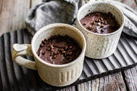

Home
Chocolate Mug Cake

Description
Chocolate Mug Cake is a quick and easy dessert made in the microwave. It’s soft, fluffy, and perfect for
satisfying chocolate cravings in minutes.
Ingredients
- 4 tablespoons all-purpose flour
- 2 tablespoons cocoa powder
- 2 tablespoons sugar
- ¼ teaspoon baking powder
- 3 tablespoons milk
- 2 tablespoons melted butter
- ½ teaspoon vanilla extract
- 1 tablespoon chocolate chips (optional)
Steps
- In a microwave-safe mug, mix flour, cocoa powder, sugar, and baking powder.
- Add milk, melted butter, and vanilla extract.
- Stir until smooth and well combined.
- Stir in chocolate chips, if using.
- Microwave on high for 1 minute to 1 minute 30 seconds.
- Let it cool for a minute before serving.
- Enjoy warm with ice cream or whipped cream.